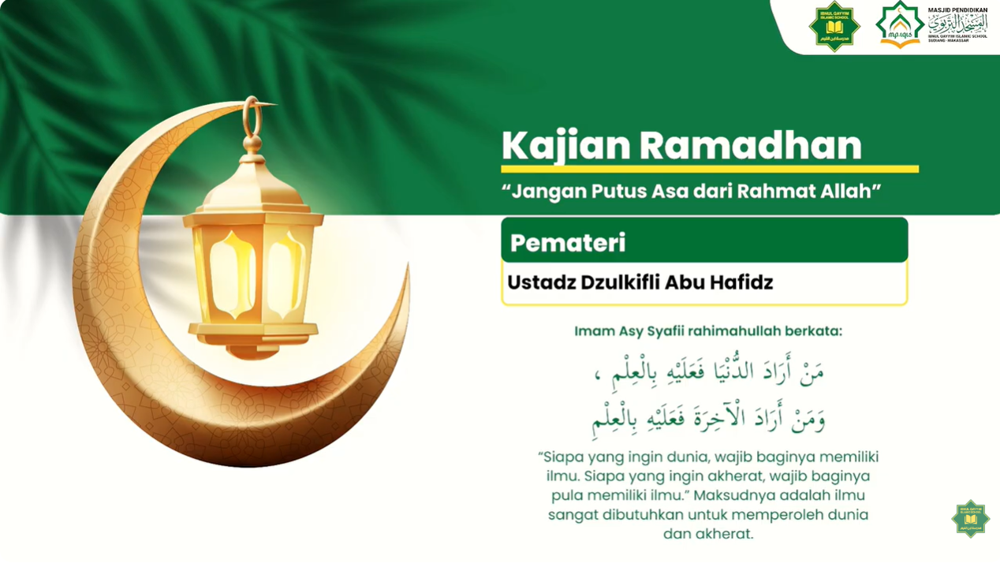
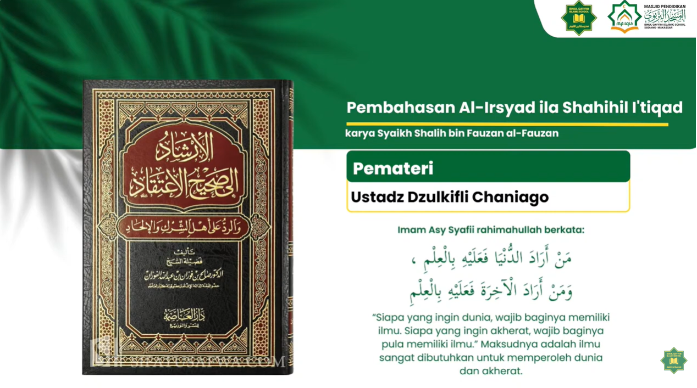

Senin 14 Maret 2025
27 Ramadhan 1445H
10:44
1 jam 23 menit lagi menuju waktu Dzuhur
 Subuh
04:53
Subuh
04:53
Dzuhur
12:14
Ashar
15:21
 Magrib
18:37
Magrib
18:37
Isya
19:26
Dzikir & Doa
Al-Qur'an
Sirah
Bahasa Arab
Aqidah
Fiqh
Penuntut Ilmu
Bertanya
Kajian Online
Lihat Semuanya
Menjadi terbaik di sisi allah
Ustadz Dzulkifli Chaniago

Amalan menambah ke
Ustadz Dzulkifli Chaniago